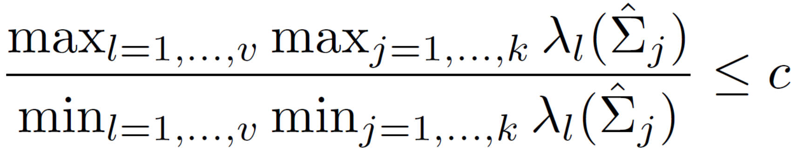
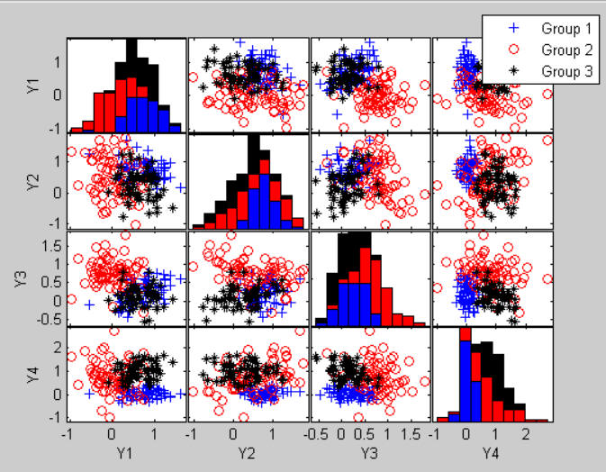
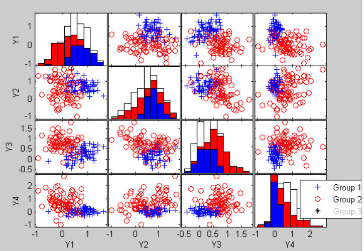
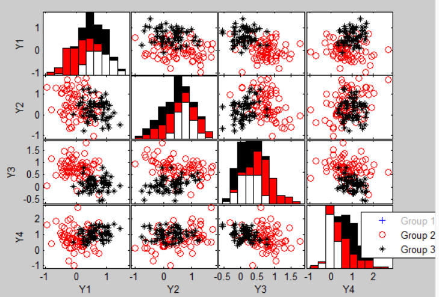
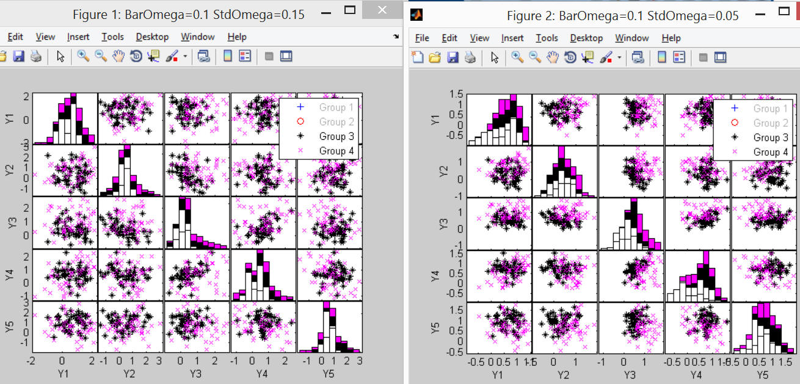
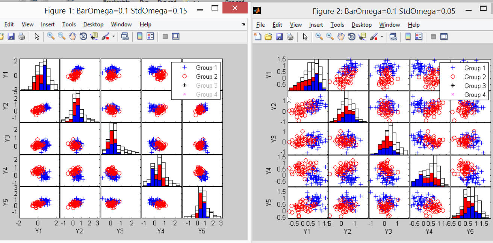

| Flexible Statistics Data Analysis Toolbox™ | |
Generates k clusters in v dimensions with a prespecified average, maximum and/or standard deviation of overlap
[out] = MixSim(k,v)
[out] =
MixSim(k,v,param1,val1,param2,val2,...)
Background: Given two generic clusters i and j with i ≠ j =1, ..., k, indexed by φ(x; μi,Σi) and φ(x; μj,Σj) with probabilities of occurrence πi and πj , the misclassification probability with respect to cluster i, (that is conditionally on x belonging to cluster i, which is called wj|i) is defined as Pr[πi φ(x; μi,Σi) < πj φ(x; μj,Σj)]. The matrix containing the misclassification probabilities wj|i is called OmegaMap. The probability of overlapping, defined as a sum of two misclassification probabilities, measures the degree of interaction between components and can be readily employed to control the clustering complexity of datasets simulated from mixtures. These datasets can then be used for systematic performance investigation of clustering and finite mixture modeling algorithms.
More specifically, the probability of overlapping between groups i and j (called pij) is given by pij =pji = wj|i + wi|j = OmegaMap(i,j)+OmegaMap(j,i), i,j=1,2, ..., k. The diagonal elements of OmegaMap are (by definition) set equal to 1. The average overlap (which in the code below is called BarOmega) is defined as the sum of the off diagonal elements of OmegaMap (Σi > j=1,2, ..., k pij ) divided by k(k-1)/2. The maximum overlap (which in the code below is called MaxOmega) is defined as max(wj|i + wi|j ) = max pij i ≠ j=1,2, ..., k. The standard deviation of overlap (which in the code is called StdOmega) is the standard deviation of the k(k-1)/2 elements pij.
The probability of misclassification wj|i (wi|j) is nothing but the cdf of a linear combination of non central Χ2 distributions with 1 degree of freedom + a linear combination of N(0,1) evaluated in a point c. The coefficients of the linear combinations of non central Χ2 and N(0,1) depend on the eigenvalues and eigenvectors of matrix Σj|i = Σ0.5i Σ-1j Σ0.5i. Point c depends on the same eigenvalues and eigenvectors of matrix Σj|i, the mixing proportions πi and πj and the determinants |Σi| and |Σj|. This probability is computed using routine ncx2mixtcdf.
MixSim admits the following inputs:
k scalar, number of groups (components)
v scalar, number of dimensions (variables).
out=MixSim(k,v) returns the following information
Pi vector of length k containing mixing proportions.
sum(out.Pi)=1.
Mu matrix of size k-by-v consisting of components' mean vectors. Each row of this matrix is a centroid of a group.
S −array of size v-by-v-by-k containing covariances for the k groups.
rcMax − vector of length 2. It containes the row and
column numbers associated with the pair of components
producing maximum overlap 'MaxOmega'.
fail − scalar, flag value. 0 represents successful mixture generation, 1 represents failure.
[out] = MixSim(k,v, param1,val1,param2,val2,...) specifies one or more of the name/value pairs described in the following table.
| Parameter | Value |
|---|---|
| 'BarOmega' | scalar, value of desired average overlap. The default value is '', that is just the value of maximum overlap MaxOmega is used. |
| 'MaxOmega' | scalar, value of desired maximum overlap. If BarOmega is empty the default value of MaxOmega is 0.15. |
| 'StdOmega' | scalar, value of desired standard deviation of
overlap. |
| 'sph' | scalar boolean which specifies covariance matrix
structure |
| 'hom' | scalar boolean which specifies heterogeneous or
homogeneous clusters |
| 'ecc' | scalar in the interval (0, 1] which defines
maximum eccentricity. |
| 'restrfactor' | scalar in the interval [1 ∞] which specifies the maximum ratio to allow between the largest eigenvalue and the smallest eigenvalue of the k covariance matrices which are generated. More in detail, if for example restrfactor=c, after generating the covariance matrices, we check that the ratio between the largest eigenvalue of the k cov matrices and the smallest eigenvalue of the k cov matrices is not larger than 'restrfactor' that is  restrfactor In order to apply this restriction (which is typical of tclust) we call routine restreigen. The default value of restrfactor is Inf that is no restriction is imposed. Remark: note that while optional parameter 'ecc' is referred to each group, parameter 'restrfactor' consideres all eigenvalues of all covariance matrices together. |
| 'PiLow' | scalar, value of the smallest mixing proportion (if 'PiLow' is not reachable with respect to k, equal proportions are taken; PiLow = 1.0 implies equal proportions by default). PiLow must be a number in the interval (0 1]. |
| 'int' | mean vectors are simulated uniformly on a
hypercube with sides specified by int = [lower.bound, upper.bound]. |
| 'resN' | maximum number of mixture simulations to find
a simulation setting with prespecified level of overlapping. |
| 'tol' | vector of length 2. |
| 'lim' | maximum number of integration terms to use
inside routine ncx2mixtcdf. Default is
1e06. |
| 'Display' | Level of display. |
| 'R_seed' | scalar for the seed to be used to generate
random numbers in a R instance. This is used to check consistency of
the results obtained with the R
package MixSim. |
Maitra, R. and Melnykov, V. (2010) “Simulating data to study performance of finite mixture modeling and clustering algorithms”, The Journal of Computational and Graphical Statistics, 2:19, 354-376. (to refer to this publication we will use "MM2010 JCGS")
Melnykov, V., Chen, W.-C., and Maitra, R. (2012) “MixSim: An R Package for Simulating Data to Study Performance of Clustering Algorithms”, Journal of Statistical Software, 51:12, 1-25.
Davies, R. (1980) “The distribution of a linear combination of chi-square random variables”, Applied Statistics, 29, 323-333.
Garcia-Escudero, L.A.; Gordaliza, A.; Matran, C. and Mayo-Iscar, A. (2008), "A General Trimming Approach to Robust Cluster Analysis". Annals of Statistics, Vol.36, 1324-1345. Technical Report available at www.eio.uva.es/inves/grupos/representaciones/trTCLUST.pdf
Reference below documents the problem of the ill-conditioning of the eigenvalue-eigenvector computation.
Numerische Mathematik, 19. August 1969, Volume 13, Issue 4, pp 293-304 Balancing a matrix for calculation of eigenvalues and eigenvectors Dr. B. N. Parlett, Dr. C. Reinsch
Parlett, B. N. and C. Reinsch, “Balancing a Matrix for Calculation of Eigenvalues and Eigenvectors,” Handbook for Auto. Comp., Vol. II, Linear Algebra, 1971,pp. 315-326.
rng(10,'twister')
out=MixSim(3,4)
disp('Print the centroids')
disp(out.Mu)
disp('Print the covariance matrices')
disp(out.S)
disp('Print the mixing proportions')
disp(out.Pi)
disp('Print matrix of misclassification probabilities')
disp(out.OmegaMap)
disp('For example the probability of overlapping between group 2 and 3 is')
disp(['out.OmegaMap(2,3)+out.OmegaMap(3,2) =' num2str(out.OmegaMap(2,3)+out.OmegaMap(3,2))])
n=200;
[X,id]=simdataset(n, out.Pi, out.Mu, out.S);
spmplot(X,id)

The matrix of misclassification probabilities (out.OmegaMap)
1.0000 0.0173 0.0228
0.0351 1.0000 0.0872
0.0377 0.0628 1.0000
shows that the most separated groups are 1 and 2

while the two groups with the highest misclassification probability are 2 and 3

% print
disp('Show the two groups with the highest probability of overlapping (out.rcMax)')
disp(out.rcMax')
2 3
For example, in the example below we generate 4 groups in 5 dimensions. In the first case we impose BarOmega=0.10 and StdOmega=0.15 while in the second case we impose BarOmega=0.10 and StdOmega=0.05. We compare through the matrix OmegaMap and visually using the scatter plot matrix, the differences coming from using a low or high standard deviation of overlapping. In order to be able to replicate the results we use a fixed seed.
rng(10,'twister')
k=4;
v=5;
n=200;
BarOmega=0.10;
StdOmega=0.15;
out=MixSim(k,v,'BarOmega',BarOmega, 'StdOmega',StdOmega,'resN',10, 'Display', 'iter');
[X,id]=simdataset(n, out.Pi, out.Mu, out.S);
rng(10,'twister')
StdOmega1=0.05;
out1=MixSim(k,v,'BarOmega',BarOmega, 'StdOmega',StdOmega1,'resN',10, 'Display', 'iter');
[X1,id1]=simdataset(n, out1.Pi, out1.Mu, out1.S);
disp('Comparison using OmegaMap')
disp('When StdOmega is large in this example groups 3 are 4 do show a strong overlap')
disp('When StdOmega is large in this example groups 1, 2, 3 are quite separate')
disp(out.OmegaMap)
disp('When StdOmega is small the probabilities of overlapping are much more similar')
disp(out1.OmegaMap)
Comparison using OmegaMap
When StdOmega is large in this example groups 3 are 4 do show a strong
overlap.
When StdOmega is large in this example groups 1, 2, 3 are quite separate.
1.0000 0.0107 0.0186 0.0123
0.0112 1.0000 0.0102 0.0053
0.0507 0.0261 1.0000 0.1476
0.0355 0.0156 0.2564 1.0000
When StdOmega is small the probabilities of overlapping are much more
similar
1.0000 0.0391 0.0337 0.0487
0.0397 1.0000 0.0404 0.0343
0.0330 0.0402 1.0000 0.0781
0.0524 0.0393 0.1213 1.0000
Comparison using interactive scatter plot matrices
disp('Comparison using interactive scatter plot matrices')
spmplot(X,id)
set(gcf,'name',['BarOmega=' num2str(BarOmega) ' StdOmega=' num2str(StdOmega)])
figure
spmplot(X1,id1)
set(gcf,'name',['BarOmega=' num2str(BarOmega) ' StdOmega=' num2str(StdOmega1)])
Groups 3 and 4 overlap much more in the left panel rather than in the right panel of figure below.

The two scatter plot matrices just show the first two groups in the two situations.

| |
minscale.html | mixsimreg.html | |